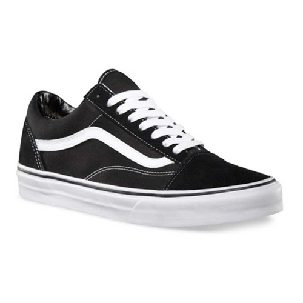
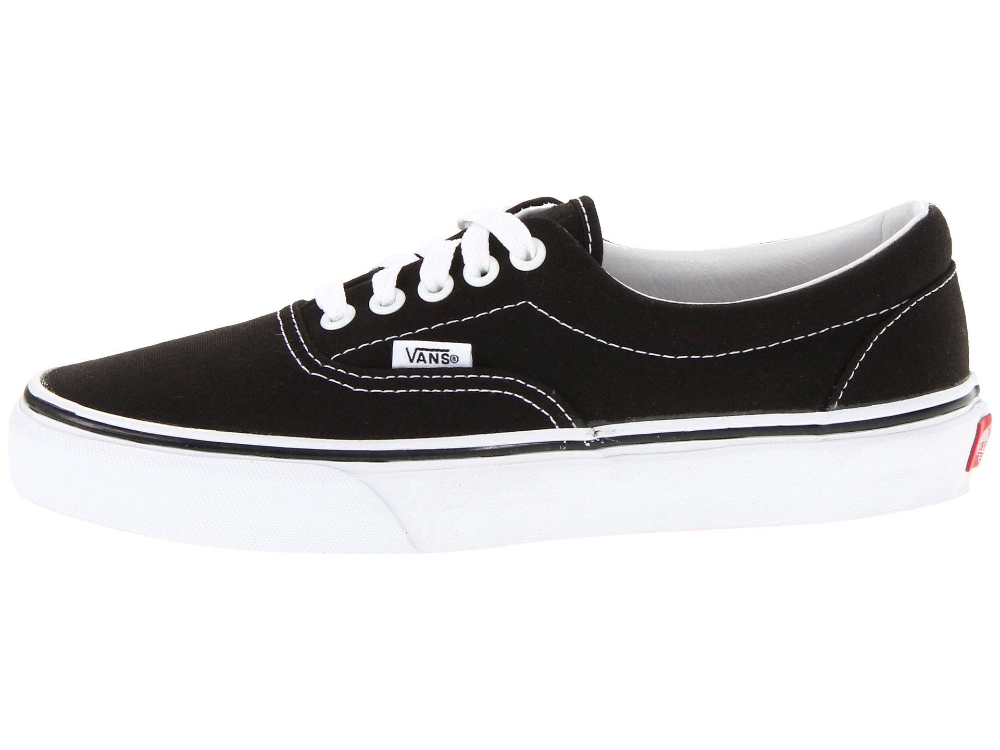
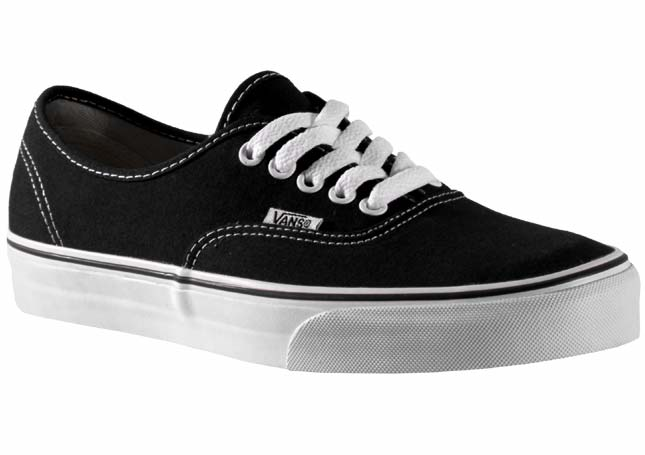

|
The Sk8-Hi was introduced in 1978 as "Style 38," and showcased the now-iconic Vans Sidestripe on yet another innovative silhouette. As only the second model featuring the recognizable marker formerly known as the "jazz stripe," the Sk8-Hi took skate functionality to the next levelâabove the ankle, where skateboarders used and abused their lower extremities the most.
The Sk8-Hi not only shielded bones from skateboards catapulted at them but also brought a whole new look to the park
|
| 
|
Vans #36, the Old Skool,
debuts with the now famous Vans Sidestripe.
The Old Skool is Vans' first skate shoe that incorporated leather panels for increased durability.
What started as a random doodle by Paul Van Doren was originally referred to as the "jazz stripe" and has become the unmistakable hallmark of the Vans brand.
|
| 
|
The Vans #95, now known as the Era, with a padded collar and different color combinations,
is designed by Tony Alva and Stacy Peralta and becomes the shoe of choice for a generation of skateboarders.
|
| 
|
The first Vans model, Style #44, or the Authentic,
retailed for less than $5. By the mid-'70s, when the shoes sold for somewhere around the outrageous sum of $8,
skaters like Tony Alva and Stacy Peralta, had discovered them. Incredibly, they could buy one pair at a time for half that price,
something that made total sense and actually still would if the world were a very different place.
|